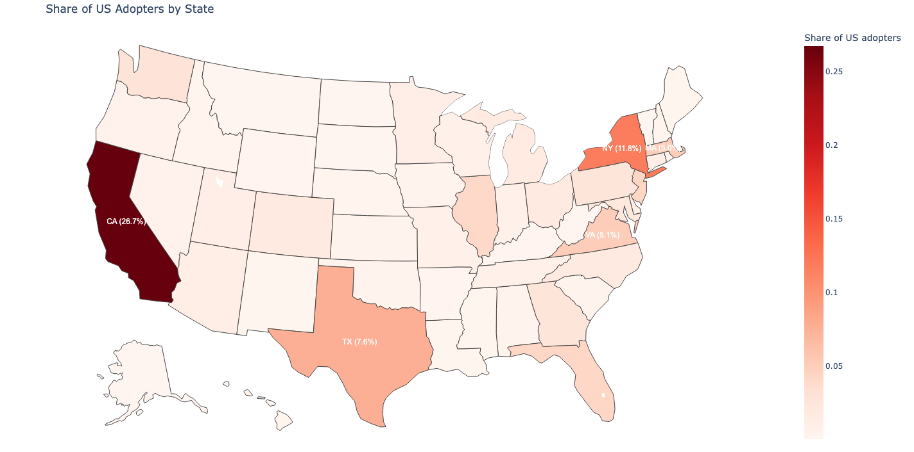
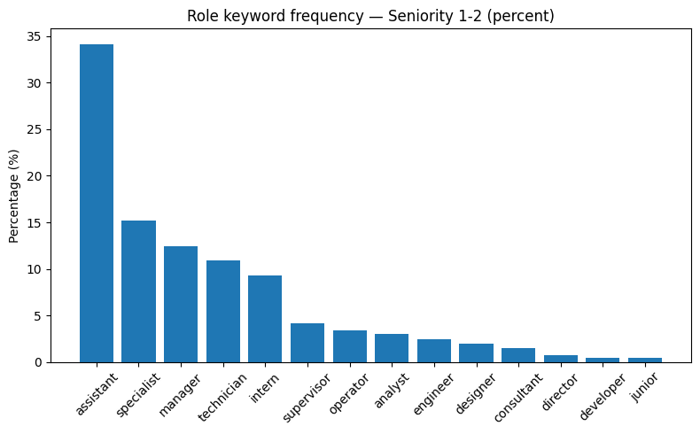
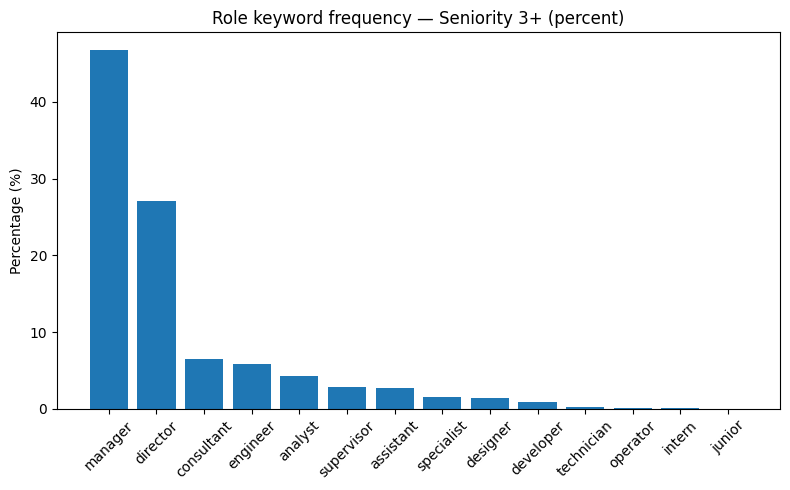
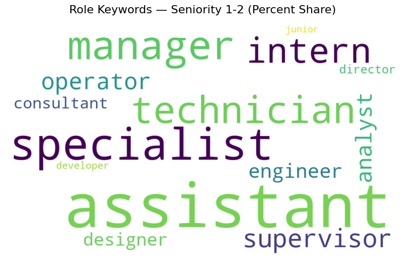

Seyed M. Hosseini † ‡ Guy Lichtinger
初步研究 2025年8月
我们研究生成式人工智能(AI)是否构成了一种资历偏向型技术变革(seniority-biased technological change)，对初级员工相对于高级员工产生不成比例的影响。使用涵盖285,000家公司中近6200万工人的美国简历和职位发布数据(2015-2025年)，我们按资历追踪公司内部就业动态。我们通过文本分析方法识别AI采用情况，该方法标记专门的”AI整合者”角色招聘信息，表明生成式AI的主动实施。双重差分和三重差分估计显示，从2023年第一季度开始，采用AI的公司中初级员工就业相对于未采用AI的公司急剧下降，而高级员工就业继续上升。初级员工的下降主要由较慢的招聘速度而非更多的离职驱动，在批发和零售贸易中影响最大。教育水平的异质性显示U型模式：中等水平毕业生降幅最大，而精英和低水平毕业生受影响较小。总体而言，结果提供了AI采用产生资历偏向影响及其机制的早期证据。
† 哈佛大学。邮箱：shosseinimaasoum@fas.harvard.edu
‡ 哈佛大学。邮箱：guylichtinger@g.harvard.edu
人工智能(AI)对初级员工的影响，特别是在高技能、白领工作中，已经吸引了研究人员和媒体的日益关注。在许多此类工作中，员工从职业阶梯的底部开始，执行智力上单调的任务，即常规但认知要求高的活动，如调试代码或审查法律文件，这些很可能特别容易受到AI近期进展的影响。随着这些员工获得经验，他们通常会在职业阶梯上晋升到更高级的角色，涉及更复杂的问题解决或管理责任(Becker, 1966; Garicano, 2000)。如果AI不成比例地针对入门级任务，这些阶梯的底层可能正在被侵蚀。
风险不仅仅是短期的工作损失。大学毕业生终身工资增长的很大一部分来自公司内部晋升，从低薪入门角色开始(Deming, 2023)。早期职业收入对不平等也有持久影响：Guvenen et al. (2022)发现美国收入不平等的近期增长主要由起薪差异而非后期收入增长驱动。如果AI不成比例地影响初级职位，它可能对大学工资溢价(college wage premium)、向上流动性和收入差距产生持久影响。
生成式AI对初级就业的预期影响在理论上是模糊的。一方面，实验研究表明AI工具可以显著提高经验较少员工的生产力(例如，Noy and Zhang, 2023; Brynjolfsson et al., 2025b)，表明AI可能补充初级员工，因此增加对其劳动力的需求。另一方面，常规认知任务的自动化可能直接替代初级员工通常执行的工作。
轶事报道加剧了对高技能行业中此类替代的担忧(例如，The New York Times, 2025a,b; Independent, 2025; The Atlantic, 2025; The Wall Street Journal, 2025)。例如，2025年7月《华尔街日报》的一篇文章强调了对初级员工需求的急剧下降，引用了主要雇主、招聘人员、劳动市场分析师和应届毕业生的观点。招聘公司Hirewell的一位高管指出，“营销代理客户几乎完全停止要求入门级员工——曾经高需求的年轻毕业生，但他们的工作现在对AI来说是’全垒打’。”一些观察者还将AI与近期劳动市场趋势联系起来：自2022年底以来，应届大学毕业生的失业率急剧上升，即使年轻员工整体失业率保持稳定(附录图A.1)。然而，其他人质疑AI在这些发展中的重要性，指出经济不确定性、新冠疫情后紧缩和增加的离岸外包等替代因素(例如，Financial Times, 2025)。
在本文中，我们旨在衡量AI对劳动市场的潜在资历偏向影响。具体来说，我们询问公司采用AI是否不成比例地影响初级角色相对于更高级职位。这一视角扩展了技能偏向型技术变革(SBTC)的经典文献，该文献强调教育或职业群体间劳动需求的变化(例如，Autor et al., 2003; Acemoglu and Autor, 2011)，延伸到一个相关但不同的维度：资历。
我们的分析利用了一个新数据集，该数据集结合了来自Revelio Labs的LinkedIn简历和职位发布数据。该数据集涵盖了近285,000家美国公司，2015年至2025年间约6200万独特员工的超过1.5亿次就业经历，以及超过2.45亿个职位发布。这些数据的一个关键优势是Revelio算法为每个职位分配的标准化资历分类，这使我们能够追踪公司内部随时间变化的初级(入门/初级)与高级(副级及以上)就业情况。
我们开发了一种新颖的方法来识别企业层面的AI采用情况，通过检测明确招聘”AI集成者”角色的职位发布。该方法分为两个步骤：首先标记包含AI相关关键词的职位发布，然后使用大语言模型确定它们是否代表真正的AI集成者职位空缺——专门负责实施或操作AI系统的角色。如果一家企业发布了至少一个这样的职位空缺，就被归类为采用者。这种方法使我们能够捕捉到已经主动开始将生成式AI整合到其运营中的企业。通过这种衡量标准，在研究期间有10,599家企业（约占我们样本的3.7%）采用了生成式AI。
我们的分析分几个步骤进行。首先，我们检查了总体模式：从2015年到2022年中期，初级和高级就业以相似的速度增长。从2022年中期开始，初级就业趋于平缓，到2023年初开始下降，而高级就业继续上升。这些结果与[Brynjolfsson]等人(2025a)的发现一致，他们在美国工资单数据中按工人年龄记录了类似的就业分化。
接下来，我们使用差分分析(DiD)框架比较采用和非采用企业，该框架分别跟踪初级和高级员工的季度就业结果。从2015年到2022年，在初级就业方面，采用者和非采用者遵循平行趋势。然而，从2023年第一季度开始，采用企业的初级员工数量相对于对照组急剧下降——六个季度后下降了7.7%。相比之下，高级就业在采用企业中自2015年以来一直增长更快，我们没有发现2022年后该趋势出现断裂的证据。
为了加强识别，我们采用了包含企业-时间固定效应的三重差分设计，这种设计吸收了每个企业在特定时间点的任何冲击或轨迹，确保识别仅来自同一企业和时间内初级和高级员工之间的差异。结果证实了DiD的发现。到2022年，系数仅显示轻微的下降趋势，这与采用企业更强的高级增长一致，而初级相对增长保持稳定。然而，从2023年第一季度开始，系数下降得更加急剧，与DiD结果中观察到的采用企业初级相对就业下降一致。
然后我们调查了这些变化背后的机制。利用我们关联的雇主-雇员数据，我们将劳动力变化分解为流入（招聘）、流出（离职）和内部晋升。采用企业初级就业的相对下降主要是由2023年第一季度后招聘的急剧放缓驱动的。有趣的是，初级员工的离职率相对于非采用者也有所下降，但这种影响远小于招聘收缩。此外，我们发现在2023年初之后，采用企业中初级员工晋升到更高级职位的情况有所增加。
行业层面的估计证实，初级招聘的下降是广泛的，但在各行业间分布不均。最大的减少发生在批发和零售贸易行业，采用企业每季度招聘的初级员工比非采用者少约40%。这种模式可能反映了这些行业中初级任务与生成式AI工具的更大可替代性，这些工具可以自动化常规沟通、客户服务和文档工作。相比之下，在所有行业中，采用企业高级招聘的变化要么是正向的，要么在统计上与零没有区别，强调了AI采用的影响集中在入门级别。
最后，我们探索了教育背景作为人力资本代理的异质性。使用大语言模型将机构分为五个层级，我们发现了一个U型模式。最急剧的相对下降发生在优秀（第2层）和良好（第3层）学校的毕业生中，而来自精英（第1层）和选择性较低（第4层）机构的初级员工的下降幅度较小。有趣的是，最小且在统计上不显著的下降发生在最低层级（第5层）毕业生中。这种模式可能表明AI采用并不是一致地压制对初级员工的需求，而是以不成比例地惩罚人力资本分布中广泛的中上层部分的方式重塑需求。
我们最后承认我们实证设计的局限性。AI采用不是随机的：采用企业在系统上与非采用企业不同。它们往往更大、更具技术导向，并且更集中在高学历劳动力中。尽管三重差分设计通过控制企业特定的冲击和轨迹有助于解决这些担忧，但我们不能完全排除采用所导致的初级-高级模式分化的其他解释。然而，在缺乏自然实验的情况下，我们相信我们的方法提供了最可信的可用证据，证明生成式AI的扩散构成了一种资历偏向的技术变革形式，对企业内初级相对于高级就业产生不利后果。
同样重要的是要注意，我们样本中只有一小部分企业采用了生成式AI（3.7%）。因此，虽然对这些企业的估计效应在经济和统计上都是显著的，但对总体劳动力市场动态的影响可能更为温和。更广泛地说，与任何利用横截面变异的实证分析一样，由于众所周知的”缺失截距问题”，我们的结果在没有额外假设的情况下不一定延伸到总体经济。
论文的其余部分安排如下。第2节回顾相关文献。第3节
第3节描述了数据来源、变量构建和描述性模式。第4节介绍了实证策略和主要结果。第5节总结。
本节将我们的贡献置于三个文献分支中：（i）技能和任务偏向的技术变革，（ii）生成式AI对劳动力市场影响的最新证据，以及（iii）使用招聘信息和简历数据的企业层面研究。我们强调了我们对已实现企业采用和企业内部资历构成的关注如何扩展了基于暴露度的方法。
关于技能偏向技术变革的经典文献显示，计算机和自动化历史上取代了从事常规、可编码任务的工人，同时补充了更复杂的工作。Autor等人（2003）记录了计算机化如何减少对常规认知和体力工作的需求，导致就业极化。Acemoglu和Autor（2011）强调技术取代了中等技能任务，同时提高了对高技能劳动力的需求，Autor和Dorn（2013）表明这伴随着低技能服务工作的增长。最近，Acemoglu和Restrepo（2022）估计自1980年以来，自动化解释了美国工资不平等上升的很大一部分。虽然这些文献关注教育或职业之间的差异，我们的论文将分析扩展到企业内部的资历。我们询问生成式AI是否是一种”资历偏向”的技术变革，不成比例地影响通常执行更简单、更程式化任务的初级员工，即使在高技能领域也是如此。
自2023年以来，快速增长的实证文献研究了AI的劳动力市场影响。实验研究通常发现AI通过提高生产力来补充经验较少的工人。例如，Noy和Zhang（2023）显示，使用ChatGPT可以大幅减少完成时间并提高输出质量，对能力较低的工人尤其有大的好处。Brynjolfsson等人（2025b）同样发现客户支持中的AI辅助平均将生产力提高了约14%，新手获得最大收益。Dell’Acqua等人（2023）在咨询工作流程中报告了类似的改进。Dell’Acqua等人（2025）中的相关实地实验证据显示，添加生成式AI副驾驶重塑了团队合作和专业知识分工，将常规认知工作转移到工具上，并将人类努力重新定向到更高层次的任务。这些发现与AI可以充当”均衡器”的观点一致，缩小经验较少和经验更丰富工人之间的生产力差距（Autor，2024）。
第二个分支，更接近我们的研究，使用广泛经济数据来追踪按AI暴露度划分的职业和行业的就业轨迹，产生了混合结果。在一篇最新论文中，Brynjolfsson等人（2025a）显示，自2022年底生成式AI首次亮相以来，AI暴露度最高职业中年轻入门级工人（22-25岁）的就业相对于趋势下降了约13%，而这些职业中经验更丰富的工人的就业保持稳定或上升。Simon（2025）记录了自2023年1月以来入门级职位招聘下降了超过35%，在高暴露度角色中下降最陡峭：暴露度增加10个百分点预测入门级需求下降11%，而这些相同职业中的高级角色上升7%。Dominski和Lee（2025）将职业暴露度分数与CPS数据联系起来，使用一阶差分设计，显示更高的AI暴露度与就业减少相关。相比之下，Chandar（2025）和Murray等人（2025）在CPS数据中没有发现更多和较少暴露职业之间就业模式的系统性差异。Eckhardt和Goldschlag（2025）使用五种暴露度测量比较失业模式，发现只有两种具有统计显著差异，即使这些影响也相对较小。我们对这一文献的贡献是超越职业层面的暴露度指数，使用企业层面的采用提供广泛的证据，通过明确的”AI集成商”角色招聘来识别。这种设计让我们研究已实现的采用决策及其企业内部资历后果。
第三个相关分支——最接近我们的方法论——使用职位招聘和简历检验企业层面采用的含义。Babina等人（2024）通过将Cognism的在线简历数据与Burning Glass招聘信息结合，构建了企业层面AI投资的测量。他们的结果表明，对于2010年代的美国公司，采用AI的公司在销售、就业和创新方面增长更快，劳动力变得更有教育背景和技术导向。Acemoglu等人（2022）同样使用2010-2018年的Burning Glass招聘信息，基于职位空缺中的任务和技能来识别AI暴露的机构。他们发现暴露度与机构层面的较低招聘相关，但在那个时期，总体职业/行业影响太小而无法检测到。最近，Hampole等人（2025）使用与我们类似的数据，结合NLP技术，构建任务层面的AI暴露度指数。他们发现在2010年到2023年之间，更高的暴露度对应更低的劳动力需求，但公司的生产力收益通过在其他地方扩大就业来抵消工作损失，导致总人数的净变化较小。总之，这些研究强调2023年前的AI采用往往涉及内部重新分配而不是总体工作损失。相比之下，我们的论文提供了在广泛生成式AI扩散的最初几年（2023-2025）期间企业层面采用的证据。通过不仅关注整体劳动力需求，还关注企业内部
企业资历结构方面，我们提供证据表明AI采用减少了初级职位招聘
同时对高级职位就业不产生影响。
我们的主要数据来源是Revelio Labs提供的详细LinkedIn简历数据集。该数据集包含从个人在线档案中获得的雇主-雇员匹配信息。对于每个工作者，我们观察到所有列出的就业职位，包括职位名称、开始和结束日期以及雇佣公司。
关键是，该数据集还包括每个职位的标准化资历等级变量，由Revelio通过基于多种信息来源的集成建模方法构建。该度量结合了以下信息：(i) 工作者当前工作（职位、公司和行业），(ii) 他们的工作历史（任期和以前的资历），以及 (iii) 他们的年龄。这三个输入产生单独的分数，然后平均成连续的资历指数，并分类为七个标准化资历等级：入门级、初级、副级、经理级、总监级、执行级和高级执行级[2]。在下面展示的大多数分析中，我们区分初级职位（入门级和初级）和高级职位（其余五个类别）。
我们用Revelio的职位发布数据库补充工作者简历数据，该数据库自2021年以来跟踪公司的招聘活动。每个发布都包含公司标识符、发布日期、职位名称、标准化职业代码（映射到O*NET-SOC）和原始文本描述。
最终样本包括284,974家美国公司，这些公司成功匹配到员工职位数据和职位发布，并在2021年1月至2025年3月期间积极招聘[3]。对于这些公司，我们观察到156,765,776个可追溯到2015年的职位和自2021年以来的245,838,118个职位发布，其中198,773,384个成功匹配了原始文本描述。
[2] 关于Revelio资历分类方法的更多详细信息可在https://www.data-dictionary.reveliolabs.com/methodology.html#seniority获得
[3] 我们将在此期间记录至少20名新员工的公司定义为活跃公司。
按资历划分的劳动力动态： 我们在公司层面构建月度面板。对于每个公司-月度观察，我们计算在该月之前开始并在该月之后结束职位的员工数量，捕捉该期间公司的劳动力规模。我们针对每个资历类别分别重复此计算，使我们能够跟踪劳动力构成随时间的变化。此外，我们按资历识别月度流入和流出。对于每个公司-月度，我们将新员工定义为该月在公司开始新职位的工作者，他们最近在另一家公司工作或这是他们第一个观察到的工作。离职定义为该月在公司职位结束并转移到不同公司或退出劳动力市场（即没有后续职位列出）的工作者。最后，我们将晋升定义为在同一公司内先前担任较低资历角色后开始新职位的工作者。
AI采用公司： 我们开发了一种新方法，通过检测明确寻求将AI技术整合到组织中的工作者的职位发布来识别采用AI的公司。理想情况下，我们会应用大语言模型(LLM)分析具有原始描述的198,773,384个职位发布的完整集合。由于这种方法在计算上是禁止的，我们分两步进行。首先，我们编制AI相关关键词列表，并标记包含至少一个关键词的所有发布[4]。在1.988亿个有原始描述的发布中，603,152个包含至少一个关键词。其次，我们对这个子集应用LLM分类器，以区分真正的”AI整合者”发布——即反映积极尝试招聘负责采用或实施基于LLM系统的工作者的发布——和误报（附录A.5.1提供了使用的确切提示）。此程序识别出131,845个发布，对应于完整语料库的0.066%，作为AI整合者职位空缺。
然后我们将发布至少一个AI整合者职位空缺的公司定义为AI采用者。基于此标准，10,599家公司（占我们284,974家公司样本的3.72%）
[4] 关键词包括：Copilot、Claude、Gemini、大语言模型、LLM、生成式AI、ChatGPT、Gen AI、GPT、LangChain、RAG、检索增强生成、向量嵌入、向量数据库、基于Transformer的模型、提示工程、提示设计、LlamaIndex、Pinecone、Weaviate、Milvus、OpenAI API、Anthropic Claude API、Azure OpenAI、Google Vertex AI Generative、HuggingFace Transformers和RetrievalQA。
被分类为AI采用者。我们的方法与Acemoglu等人(2022)相关，他们通过搜索从职位发布中提取的33个AI相关技能在Burning Glass数据中识别AI相关职位空缺。我们通过应用基于LLM的分类扩展了他们的方法，这使得能够更直接和准确地检测明确寻求AI整合者的发布——这是在他们研究时不可用的能力。
下面我们展示两个说明性职位发布，被LLM识别为[5] AI整合者角色的明确例子。
角色：初级产品经理（计算机和网络安全，Aryaka Networks）
我们正在寻找一位积极上进的初级产品经理，具有强大的理解能力
GenAI安全挑战，提示工程的实践经验，最好还有
整合GenAI安全和安全产品/服务的经验。该职位涉及
开发和记录用例，需要至少一年的Python编程经验。
主要职责：
• 与跨职能团队协作解决GenAI安全挑战。
• 应用提示工程技术优化AI输出。
• 整合GenAI安全和安全产品到工作流程中。
• 为GenAI应用开发和维护用例。
• 协助产品功能增强安全性和安全保障。
[5] [如附录所示] [[A.5.1]][[，]我们指示LLM排除AI生产商。然而，经过人工检查，]
[我们发现一些职位空缺从事帮助其他公司将LLM整合到其] [工作流程中，我们将这些职位分类为整合商。虽然这并不能直接证明此类公司] [已经内部嵌入了AI，但我们认为这是一个合理的代理指标，因为提供整合服务的公司] [极有可能自己已经采用了这些技术。]
职位：生成式AI开发顾问（IT服务和IT咨询，Genesis10）
摘要：我们正在寻找一位才华横溢且积极进取的软件工程师加入我们的团队，
专注于使用生成式AI技术开发创新应用程序。您将
在设计、构建和部署利用AI转变用户体验的解决方案中发挥关键作用。
职责：
• 设计和开发利用生成式AI模型的可扩展应用程序。
• 与跨职能团队协作提供解决方案。
• 将AI模型整合到现有系统和应用程序中。
• 优化和微调AI算法以提高性能和准确性。
• 进行代码审查并指导初级团队成员。
. . .
学校质量：[为了衡量教育背景的质量，我们构建了一个]
学校质量变量，为每个职位分配担任该职位的个人所就读学校的评级。对于每个职位，我们分配在工作开始后不晚于一年结束的最近教育经历的学校；如果不存在此类经历，我们回溯到个人的第一个记录教育经历，前提是它在职位开始日期之前开始。然后我们将这些大学与一个外部学校列表合并，其中每个机构按1–5等级评级。这些评级使用OpenAI的GPT-4o-mini模型生成，提示模型充当学术评估者并分配单个整数分数，其中1对应常春藤/精英全球层级（例如，哈佛、斯坦福、MIT），2对应非常强大且国际认可的机构，3对应稳健的国家或地区大学，4对应较低层级但标准的大学，5对应非常薄弱或文凭工厂(diploma-mill)机构（确切提示见附录[A.5.2]）。
公司AI暴露度：[虽然不是本文的主要关注点，我们也检查了公司的]
生成式AI暴露度。为了构建这个指标，我们借鉴了[Eloundou et al. (2024)]开发的任务级暴露度
指数。在他们的框架中，暴露度是通过人工标注者和GPT-4应用于O*NET任务的评分标准来定义的：如果LLM能够在保持或提高质量的同时将完成任务所需的时间减少至少50%，则认为该任务是暴露的。由于我们的分析关注生成式AI的相对早期影响，我们使用”alpha”指标，它捕获来自单独LLM或通过简单界面的暴露度，而不是”beta”或”gamma”指标，后者还包含需要补充软件才能实现50%时间节省的任务。遵循他们的加权方案，我们将职业级暴露度计算为核心任务（全权重）和补充任务（半权重）的加权平均值。最后，我们通过取公司在2022年（生成式AI广泛传播之前）发布的所有职位空缺的平均暴露度，聚合到公司层面。
表[1]报告了全样本、AI采用者和非采用者的描述性统计。出现了几个系统性差异。公司规模和劳动力结构突出：AI采用者规模远大，平均近500名员工，而非采用者约100名员工。他们的劳动力更加偏向高级人员，初级员工仅占就业的42%，而非采用者为55%。一致地，采用者经历了更高的招聘和离职量，这些流动中更大比例涉及高级职位。采用者也倾向于从更高质量的大学招聘，来自第5级（最低质量）机构的初级员工更少，来自第1级和第2级学校的更多。如预期，采用者在Eloundou et al. (2024) alpha暴露度指数上得分显著更高，表明他们雇用的工人所从事的职业具有更大比例的暴露任务。
虽然非采用者广泛分布在各个行业，AI采用者高度集中在信息业（36%）和专业服务业（25%），这两个知识密集型行业是AI采用最突出的领域。在地理分布上，采用者总部不成比例地位于加利福尼亚州（21%对比总体14%），而在德克萨斯州的代表性比非采用者略低。附录[A.2]和[A.4]提供了采用者在各行业和各州分布的更多细节。
表1：描述性统计：所有公司、AI采用者和非采用者
| 变量 | 所有公司 | 非采用者 | AI采用者 |
|---|---|---|---|
| 面板A. 劳动力构成和特征 | |||
| 公司规模（平均员工数） | 116.0 | 101.3 | 498.1 |
| (426.7) | (360.1) | (1177.4) |
[分享初级员工比例 (Entry/Junior)] [0.548] [0.553] [0.422]
[(0.228)] [(0.227)] [(0.211)]
[分享高级员工比例 (Associate+)] [0.454] [0.450] [0.581]
[(0.228)] [(0.227)] [(0.211)]
[平均新员工雇佣数量 (每季度)] [6.5] [5.7] [27.1]
[(23.9)] [(20.6)] [(62.6)]
[新员工中初级员工比例] [0.670] [0.677] [0.508]
[(0.351)] [(0.351)] [(0.307)]
[新员工中高级员工比例] [0.330] [0.323] [0.492]
[(0.351)] [(0.351)] [(0.307)]
[平均离职数量 (每季度)] [5.2] [4.6] [21.1]
[(21.2)] [(18.5)] [(53.8)]
[离职人员中初级员工比例] [0.686] [0.692] [0.531]
[(0.351)] [(0.351)] [(0.311)]
[离职人员中高级员工比例] [0.314] [0.308] [0.469]
[(0.351)] [(0.351)] [(0.311)]
[初级员工平均晋升数量 (每季度)] [0.531] [0.439] [2.9]
[(2.4)] [(1.8)] [(7.6)]
[来自第一梯队大学的初级员工比例 (最高质量)] [0.034] [0.033] [0.054]
[(0.091)] [(0.090)] [(0.109)]
[来自第二梯队大学的初级员工比例] [0.107] [0.107] [0.116]
[(0.142)] [(0.142)] [(0.130)]
[来自第三梯队大学的初级员工比例] [0.209] [0.210] [0.175]
[(0.175)] [(0.176)] [(0.148)]
[来自第四梯队大学的初级员工比例] [0.154] [0.156] [0.112]
[(0.142)] [(0.143)] [(0.113)]
[来自第五梯队大学的初级员工比例 (最低质量)] [0.094] [0.095] [0.064]
[(0.113)] [(0.113)] [(0.087)]
[平均曝光指数 (2022)] [0.346] [0.344] [0.385]
[(0.165)] [(0.167)] [(0.093)]
[面板B. 行业和总部位置]
[NAICS第51行业比例 (信息业)] [0.121] [0.110] [0.360]
[NAICS第52行业比例 (金融和保险业)] [0.078] [0.077] [0.082]
[NAICS第54行业比例 (专业服务业)] [0.179] [0.175] [0.246]
[NAICS第5行业比例 (其他)] [0.063] [0.063] [0.068]
[非NAICS第5行业比例] [0.559] [0.575] [0.244]
[总部位于加利福尼亚] [0.140] [0.138] [0.210]
[总部位于得克萨斯] [0.075] [0.076] [0.060]
[总部位于纽约] [0.081] [0.081] [0.093]
[总部位于其他州] [0.711] [0.713] [0.642]
[观测值] [11,674,996] [11,240,847] [434,149]
[公司数量] [284,756] [274,167] [10,589]
[注释：] [该表报告了从2015Q1到2025Q1期间按公司季度观测值计算的主要变量平均值，分别针对全样本、AI采用者和非采用者。标准偏差（对于非二元变量）在括号中报告。面板A报告了劳动力构成，如招聘和离职、员工教育背景和自动化曝光。面板B报告了行业和总部州分布。]
综合来看，这些统计数据描绘了AI采用者作为更大规模、更侧重高级员工的公司，具有更高的员工流动量、从精英院校更强的招聘能力，以及在技术密集型行业和州的更大存在感——所有这些特征都与AI技术最可能扎根的环境相符。
接下来，图1记录了公司发布首个AI集成者职位空缺的时间。如第3.2节详述，如果一家公司在研究期间发布了至少一个AI集成者职位空缺，我们将其归类为AI采用者。在2023年之前，发布此类职位空缺的新公司数量很少且稳定，平均每月约30家。从2023年初开始，这一数字急剧上升，在2023年8月达到456家的峰值。此后，它保持在每月约400家公司的稳定水平，直到2024年底。在2025年初，数字再次增加，在2025年3月达到574家新公司。到样本期末，累计采用者数量超过10,000家公司。
[注释：] [面板(a)显示了每月发布首个AI集成者职位空缺的公司数量，而面板(b)报告了累计总数，涵盖了从2021年9月到2025年3月的期间。有关AI集成者职位发布识别的详细信息，请参见第3.2节。]
最后，图2展示了我们数据中初级和高级就业的总体时间序列。我们将”初级”员工定义为Entry或Junior级别职位的员工，将”高级”员工定义为Associate级别及以上的员工（详见第3.1节）。该图显示了每组员工的平均数量（跨我们样本中的所有公司）随时间的变化，以2015年1月为基准标准化为1。
从期间开始到2020年初，初级和高级就业彼此密切跟踪，以几乎相同的速度增长。在COVID-19大流行开始时，初级就业比高级就业下降得稍多，但恢复很快，两组都回到了相似的增长率，直到2022年中期。然而，从2022年中期开始，出现了明显的分化。高级就业继续稳步扩张，而初级就业趋于平缓。到2023年中期，差距进一步扩大：高级就业以大致相同的速度继续上升，但初级就业开始下降。这种模式与Brynjolfsson等人(2025a)的发现一致，他们在美国按员工年龄划分的工资单数据中记录了类似的就业分化。他们的结果与我们的结果之间的一致性为我们基于LinkedIn数据集中观察到的模式提供了外部验证。

[注释：] [此图显示了样本公司中初级工人和高级工人平均数量随时间的变化，以2015年1月为基准标准化为1。我们将”初级”工人定义为] [入门级或初级职位的工人，将”高级”工人定义为副级及以上职位的工人（详见]
[第] [[3.1]] [节）。]
我们通过比较采用和未采用生成式AI技术的公司，研究生成式AI技术的采用如何影响就业动态[^6]。我们的第一种方法是双重差分(DiD)规范，分别对初级和高级工人进行估计：
log(Employment_it) = α + δ_t + β_j ∑[j=2015Q1 to 2025Q1] 1{t = j} × Adopt_i + Adopt_i + ε_it, (1)
其中因变量log(Employment_it)表示公司i在时期t的初级（或高级）工人的对数就业量。项1{t = j}是一个指示函数，当t = j时等于1，否则为0，因此系数β_j捕捉了每个时期j中采用者相对于非采用者的就业差异演变。变量Adopt_i是一个虚拟变量，对于采用生成式AI的公司等于1，如第3.2节所定义。时间固定效应δ_t吸收所有公司共同的总体冲击，而Adopt_i控制采用者和非采用者之间的时间不变差异。误差项ε_it捕捉就业的未观察到的特异性决定因素。
图3报告了估计的系数β_j。对于初级工人，系数在2022Q4之前保持平稳且与零无显著差异，符合平行预趋势假设。从2023Q1开始，系数急剧转为负值，表明在生成式AI扩散六个季度后，采用公司的初级就业相对于对照组下降了7.7%。相比之下，高级工人的系数在整个样本期间显示出持续的上升趋势，表明采用公司在过去十年中比非采用者更强劲地扩大了高级就业。
[^6] [为了计算效率，我们在所有分析中将面板数据聚合为季度频率。]

图3： 采用者与非采用者随时间的就业差异
[注释：] [该图显示了从方程] [1] [分别对初级和高级工人运行得出的估计系数] [β_j] [。标准误差在公司层面聚类。]
接下来，我们使用三重差分规范来考虑公司特定的就业轨迹：
log(Employment_ist) = α + β_j ∑[j=2015Q1 to 2025Q1] 1{t = j} × Adopt_i × Junior_s
π_j ∑[j=2015Q1 to 2025Q1] 1{t = j} × Adopt_i + ρ_j ∑[j=2015Q1 to 2025Q1] 1{t = j} × Junior_s
κ(Adopt_i × Junior_s) + γ_it + ε_ist, (2)
其中log(Employment_ist)表示公司i在时期t资历组s ∈ {初级, 高级}工人的对数就业量。指示器1{t = j}在时期j等于1，否则为0。Adopt_i是公司级别的虚拟变量，对于采用生成式AI的公司等于1（定义见第3.2节），Junior_s是一个指示器，对初级工人等于1，对高级工人等于0。系数β_j形成了一个三重差分事件时间轮廓，比较采用者相对于非采用者在公司i时期j内初级工人与高级工人的情况。公司按时间固定效应γ_it吸收公司-时间层面的任意冲击，确保识别来自公司-时间内初级-高级对比。主要识别假设是，在考虑了公司按时间固定效应和低阶交互项后，没有其他因素在采用与非采用公司中系统性地以不同方式影响初级和高级工人。
图4展示了结果。由于计算限制，估计从2018Q1开始。在2018Q1和2022Q4之间，系数显示出轻微的下降趋势。然而，从2023Q1开始，我们观察到明显的结构性断点：系数下降更加陡峭，表明在采用公司内，初级工人相对于高级工人的就业下降了12%。这种模式与图3中的DiD结果一致：采用公司的高级就业在整个样本期间持续增长，而初级就业在2022Q4之前保持平稳，然后急剧下降。趋势断点与2023年初生成式AI的扩散相吻合，为AI构成资历偏向型技术变革提供了暗示性证据——减少初级就业而不影响高级就业。

图4： 三重差分结果
[注释：] [该图显示了从方程] [2] [得出的估计系数] [β_j] [。标准误差在公司层面聚类。]
为了分解这些调整，我们估计以下形式的单独双重差分回归：
y_it = α + β(Adopt_i × Post_t) + γ_i + δ_t + ε_it, (3)
其中y_it表示公司i在时间t的招聘、离职、晋升或净变化数量。变量Adopt_i是一个指示器，对AI采用公司等于1，
Post等于一，对于从2023年第一季度开始的期间，否则为零。γ[i]表示企业固定效应，δ[t]是时间固定效应。
表2展示了方程3的结果。结果显示，在采用者中观察到的初级员工急剧减少主要由招聘减少而非离职增加所驱动。具体而言，招聘系数表明，相对于非采用者，采用AI的企业在2023年第一季度后平均减少招聘3.7名初级员工。有趣的是，相对于非采用者，采用者的初级员工离职率也有所下降，但影响较小，平均不到一名员工，且比招聘收缩的影响要弱得多。
表2：AI采用对招聘、离职、晋升和总变化的影响
|招聘|离职|晋升|总变化| |Panel A: 初级员工|||| |Treat × Post|−3.694|−0.788|0.391|−3.436| ||(0.227)|(0.173)|(0.033)|(0.146)| |Panel B: 高级员工|||| |Treat × Post|0.821|2.271|–|−0.728***| ||(0.141)|(0.114)||(0.137)| |观察值|11,683,934|11,683,934|11,683,934|11,398,960| |集群(企业)|284,974||||
注：括号内为按企业聚类的标准误。我们在所有列中都控制了企业和时间固定效应。 * ** *** p < 0.10, p < 0.05, p < 0.01.
我们忽略了异质性采用时机，假设所有采用者从2023年第一季度开始被视为处理组。这种方法可能会削弱估计效应，因为实际采用率从2023年开始随时间增长。
注意这些效应的幅度在经济上是巨大的。在2023年第一季度之前，采用AI的企业平均招聘初级员工数量为17.45人。因此，我们的估计表明，相对于非采用者，采用企业将其初级员工招聘减少了约22%的平均招聘量。相比之下，AI采用者相对于非采用者增加了约0.8名高级员工的招聘，但同时经历了额外2.2名高级员工的离职，导致相对高级员工就业增长的小幅净下降。
综合来看，这些发现表明采用企业内初级员工数量的减少并非解雇或流失率升高的结果，而是反映了新进入的放缓。这种模式与企业在生成式AI工具可用后战略性地缩减初级员工招聘，同时继续保留现有员工队伍的做法一致。
有趣的是，晋升回归指向了一个互补的调整边际。相对于非采用者，采用企业平均增加了约0.4个授予初级员工的晋升机会。这表明虽然招聘的初级员工更少，但留下的员工可能面临更多的内部晋升机会。一种解释是生成式AI替代了入门级任务，减少了对新初级员工的需求，但同时提高了有经验初级员工的相对价值，他们更可能被晋升到高级职位。
为了补充就业结果，我们估计生成式AI采用对各行业招聘数量的影响。具体而言，我们运行以下形式的回归：
Hires[it] = α + β(Adopt[i] × Post[t]) + δ[t] + γ[i] + ε[it], (4)
其中Hires[it]表示企业i在时间t招聘的新初级或高级员工数量，Adopt[i]是生成式AI采用者的指示变量，Post[t]是采用后期间的指示变量，定义为2023年第一季度之后。我们还控制了时间和企业固定效应。图5报告了各主要行业的结果。
我们发现，在所有行业中，采用企业都显著减少了
注：行业对应以下NAICS分类：制造业(31-33)、批发/零售(42, 44-45)、信息业(51)、金融保险(52)、专业服务(54)、教育(61)和医疗保健及社会援助(62)。所有系数都按各行业2023年前的平均招聘数量标准化，以考虑各行业基线劳动力流动的差异。标准误在企业层面聚类。
初级员工的招聘，而对高级员工招聘没有统计上显著的影响。有趣的是，我们观察到批发和零售行业的采用企业经历了最大的招聘下降，相比非采用者每季度减少约40%的初级员工招聘。这种模式可能反映了这些行业中初级任务与生成式AI工具的更大可替代性，生成式AI可以自动化常规沟通、客户服务和文档工作。
在本节中，我们通过根据教育背景区分初级员工来探讨他们就业下降的异质性。具体而言，我们使用他们就业前就读院校的质量作为人力资本的代理变量(关于学校质量衡量的详细信息见第3.2节)。为了捕捉这些差异，我们
分别对五个初级员工类别估计以下回归，按学校声望定义：
log[(初级员工就业)] = α + β(采用 × 后期t) + δt + εit (5)
结果如图6所示，呈现U型模式。来自二线和三线大学的初级员工经历了最急剧的相对就业下降。来自一线（精英）和四线学校的初级员工也出现了下降，但幅度较小。相比之下，来自五线（低声望）院校的初级员工仅经历了轻微下降，在统计上与零无显著差异。
图6：按学校质量分类的结果
注：该图展示了方程(5)的估计结果，按大学声望类别分别对初级员工进行估计。系数代表AI采用者相对于非采用者在采用后初级员工就业的变化。标准误在公司层面进行聚类。
图7通过绘制各学校质量类别初级员工的平均采用前薪资提供了额外背景。不出所料，来自精英（一线）学校的初级员工薪资最高，而来自低声望（五线）院校的初级员工薪资大约只有前者的一半。
结合图6和图7意味着一种权衡：在顶端，高生产力/质量可能阻止公司过度削减招聘，尽管采用了生成式
图7：按学校质量分类的预测薪资（初级员工，2022年）
注：柱状图显示2022年就业初级员工按大学声望类别的平均预测薪资（美元）。薪资与学校声望单调递减，精英学校（一线）的初级员工薪资最高，低声望学校（五线）的初级员工薪资大约只有前者的一半。
AI的采用，而在底端，低成本保护了低声望初级员工免受替代。相比之下，中等层次的初级员工——结合了中等成本和中等质量——似乎最容易受到替代影响，经历了最急剧的就业减少。
本文提供了早期、广泛的证据，表明自2023年以来生成式AI的扩散与公司内部的资历偏向(seniority-biased)技术变革相关。使用与近285,000家美国公司相关联的简历发布数据和基于”AI集成师”职位空缺的直接采用衡量指标，我们记录了采用公司初级员工就业的急剧相对下降，同时高级员工就业持续增长。我们的双重差分估计表明，从2015年到2023年，初级员工的趋势平稳，随后在2023年第一季度出现离散断点。具有公司-时间固定效应的三重差分规格确认，随着生成式AI的扩散，公司内部初级-高级差距恰好扩大。
初级员工就业的下降主要由招聘减少驱动。采用公司在2023年第一季度后大幅削减初级员工招聘，离职也适度减少，这意味着净下降主要通过较慢的进入而非裁员发生。与此同时，现有初级员工的晋升增加，表明虽然公司招聘较少的新员工，但已在公司内部的员工可能受益于更多晋升到高级职位的机会。部门层面的证据显示，这种模式不仅限于信息技术：批发和零售业在初级员工招聘方面削减最大，其他几个主要部门也有较小但仍有意义的下降。
我们还发现教育背景的异质性。初级员工就业的下降遵循U型模式：中等层次院校的毕业生受影响最大，而精英和低层次学校的毕业生经历较小的减少，最低层次显示微不足道的影响。结合采用前的薪资差异，这种模式符合简单的权衡：在顶端，较高的生产力阻止公司过度急剧地减少招聘；在底端，较低的成本保护初级员工免受替代；在中间，初级员工似乎最容易受到替代影响。
这些发现应谨慎解释。AI采用不是随机的，采用者在规模、劳动力构成和部门方面系统性地不同。尽管三重差分设计吸收了公司特定的冲击和轨迹，但不能排除混淆因素。我们基于集成师职位发布的采用衡量指标捕获了已实现的组织采用，但可能遗漏了不通过明确招聘发生的采用形式。最后，分析窗口相对较短（2023-2025年），培训、任务设计和内部职业阶梯的长期调整可能减轻或放大这些初始效应。
即使有这些警告，我们的结果指向重要含义。生成式AI似乎将工作从入门级任务转移，缩窄了内部职业阶梯的”底层阶梯”。由于早期职业工作在终身工资增长和流动性中发挥关键作用，这些动态可能对不平等和大学工资溢价(college wage premium)产生持久后果。公司方面可能通过更多依赖有经验的工人和加速现有员工的晋升来适应。总的来说，我们的证据表明生成式AI具有资历偏向性，对职业如何开始、公司如何培养人才以及新技术的收益如何分配具有重要影响。
Acemoglu, D. and Autor, D. (2011). 技能、任务和技术：对就业和收入的影响。《劳动经济学手册》第4卷，第1043-1171页。爱思唯尔出版社。
Acemoglu, D., Autor, D., Hazell, J., and Restrepo, P. (2022). 人工智能与就业：来自在线招聘信息的证据。《劳动经济学杂志》，40(S1):S293-S340。
Acemoglu, D. and Restrepo, P. (2022). 任务、自动化和美国工资不平等的上升。《计量经济学》，90(5):1973-2016。
Autor, D. (2024). 应用人工智能重建中产阶级就业岗位。技术报告，国家经济研究局。
Autor, D. H. and Dorn, D. (2013). 低技能服务业就业岗位的增长和美国劳动力市场的两极分化。《美国经济评论》，103(5):1553-1597。
Autor, D. H., Levy, F., and Murnane, R. J. (2003). 近期技术变革的技能内容：一项实证探索。《经济学季刊》，118(4):1279-1333。
Babina, T., Fedyk, A., He, A., and Hodson, J. (2024). 人工智能、企业增长和产品创新。《金融经济学杂志》，151:103745。
Becker, G. (1966). 人力资本(Human capital)：理论与实证分析，特别涉及教育的剩余因子和经济增长的计量经济学模型。
Brynjolfsson, E., Chandar, B., and Chen, R. (2025a). 煤矿中的金丝雀？关于人工智能近期就业影响的六个事实。工作论文。最新版本可在 https://digitaleconomy.stanford.edu/publications/canaries-in-the-coal-mine/ 获取。
Brynjolfsson, E., Li, D., and Raymond, L. (2025b). 工作中的生成式人工智能。《经济学季刊》，页码qjae044。
Chandar, B. (2025). 追踪受人工智能影响职位的就业变化。SSRN 5384519可获取。
Dell’Acqua, F., Ayoubi, C., Lifshitz, H., Sadun, R., Mollick, E., Mollick, L., Han, Y., Goldman, J., Nair, H., Taub, S., et al. (2025). 控制论队友：生成式人工智能重塑团队合作和专业知识的现场实验。技术报告，国家经济研究局。
Dell’Acqua, F., McFowland III, E., Mollick, E. R., Lifshitz-Assaf, H., Kellogg, K., Rajendran, S., Krayer, L., Candelon, F., and Lakhani, K. R. (2023). 在崎岖的技术前沿中导航：人工智能对知识工作者生产力和质量影响的现场实验证据。哈佛商学院技术与运营管理系工作论文，(24-013)。
Deming, D. J. (2023). 为什么受过教育的工作者工资增长更快？技术报告，国家经济研究局。
Dominski, J. and Lee, Y. S. (2025). 推进人工智能能力和不断演变的劳动力结果。arXiv预印本arXiv:2507.08244。
Eckhardt, S. and Goldschlag, N. (2025). 人工智能与就业：最终定论（直到下一个）。经济创新集团。访问日期2025-08-30。
Eloundou, T., Manning, S., Mishkin, P., and Rock, D. (2024). GPTs就是GPTs：大语言模型的劳动力市场影响潜力。《科学》，384(6702):1306-1308。
Financial Times (2025). 人工智能正在扼杀毕业生就业吗？https://www.ft.com/content/996b6acb7-a079-4f57-a7bd-8317c1fbb728?shareType=nongift 。作者：Clara Murray、Delphine Strauss、John Burn-Murdoch和Sarah Lim。发表于2025年7月24日。
Garicano, L. (2000). 生产中知识组织的等级制度。《政治经济学杂志》，108(5):874-904。
Guvenen, F., Kaplan, G., Song, J., and Weidner, J. (2022). 美国六十年来的终身收入。《美国经济学杂志：应用经济学》，14(4):446-479。
Hampole, M., Papanikolaou, D., Schmidt, L. D., and Seegmiller, B. (2025). 人工智能与劳动力市场。技术报告，国家经济研究局。
Independent (2025). 人工智能正在破坏本已脆弱的大学毕业生就业市场。https://www.wsj.com/lifestyle/careers/ai-entry-level-jobs-graduates-b224d624 。发表于《华尔街日报》，2025年7月29日。印刷版标题为”人工智能正在扼杀入门级就业”，2025年7月31日。
Murray, C., Strauss, D., Burn-Murdoch, J., and Lim, S. (2025). 人工智能正在扼杀毕业生就业吗？《金融时报》。通过https://www.ft.com/content/99b6acb7-a079-4f57-a7bd-8317c1fbb728访问。
Noy, S. and Zhang, W. (2023). 生成式人工智能生产力效应的实验证据。《科学》，381(6654):187-192。
Simon, L. K. (2025). 人工智能是否应为入门级失业率上升负责？https://www.reveliolabs.com/news/macro/is-ai-responsible-for-the-rise-in-entry-level-unemployment/ 。Revelio Labs，宏观版块。
The Atlantic (2025). 就业市场正在发生令人担忧的变化。https://www.theatlantic.com/economy/archive/2025/04/job-market-youth/682641/ 。作者：Derek Thompson。发表于《大西洋月刊》，2025年4月。
The New York Times (2025a). 对一些应届毕业生来说，人工智能就业末日
事件可能已经发生。[https://www.nytimes.com/2025/05/30/technology/]
ai-jobs-college-graduates.html. 作者Kevin Roose。发表于2025年5月30日。印刷版标题为”进门机会？AI已在做这些工作”。
《纽约时报》(2025b)。LinkedIn高管：AI正在抢夺入门级工作岗位。
访问时间：2025-06-20。
《华尔街日报》(2025)。让科技工作更难找的”伟大犹豫”。访问时间：2025-06-20。
图A.1： 近期大学毕业生与所有年轻工作者的失业率
注释： 橙色线显示近期美国大学毕业生（22-27岁、拥有学士学位）的月度失业率，蓝色线显示所有22-27岁美国工作者的失业率。自2022年末以来，大学毕业生失业率有所上升，而整体年轻工作者失业率保持平稳。数据来源：纽约联邦储备银行，近期大学毕业生劳动力市场。
图A.2显示了采用者在美国各州的分布。不出所料，采用主要集中在加利福尼亚州，该州单独占所有采用者的约26%。重要的是，这一份额虽然很大，但并非多数。前五大采用者州是加利福尼亚、纽约、德克萨斯、马萨诸塞和弗吉尼亚，这些都是技术密集型地区。这种模式突出表明，AI采用并不仅仅是硅谷现象，而是跨越了几个大型、技术密集型州。

图A.2： 美国各州采用者的份额。
为了验证Revelio Labs提供的资历变量，我们进行了角色关键词频率分析。目标是检查与低资历工作者（“资历1和2”）和高资历工作者（“资历3+”）相关的职位头衔是否符合直觉预期。
对于初级角色（资历1和2），最频繁的关键词是助理、专员、技术员和实习生，这与入门级或支持性职位一致。相比之下，对于高级角色（资历3+），主要关键词是经理、主管和顾问，这些与领导力和更高责任职位相关。这种模式为资历分类的有效性提供了有力支持。
图A.3-A.6使用条形图和词云来说明这些分布。条形图报告每个角色关键词的百分比份额，而词云以更直观的方式可视化其相对频率。

图A.3： 角色关键词频率 — 资历1和2（百分比）。

图A.4： 角色关键词频率 — 资历3+（百分比）。

图A.5： 角色关键词 — 资历1-2（百分比份额）。

图A.6： 角色关键词 — 资历3+（百分比份额）。
在这个附录中，我们提供了AI采用的行业分布的描述性证据。图A.7记录了每个主要行业中采用AI的公司份额，而图A.8显示了仅采用者的分布，即属于每个行业的采用公司的比例。这些图表突出表明，采用并不集中在单一行业，而是分布在信息、专业服务、金融、制造业和其他行业。不出所料，采用在知识和技术密集型行业中稍高，但制造业和批发/零售等传统行业也有代表。
图A.7： 各行业采用者份额。注释：报告所有公司在各行业的分布。行业对应以下NAICS代码：制造业(3)、批发/零售(4)、信息(51)、金融保险(52)、专业服务(54)、教育(61)、医疗保健和社会援助(62)。
图A.8： 采用者在各行业的分布。注释：报告仅限于AI采用者的分布。行业对应以下NAICS代码：制造业(3)、批发/零售(4)、信息(51)、金融保险(52)、专业服务(54)、教育(61)、医疗保健和社会援助(62)。
我们通过groq api使用llama-3.1-8b-instant模型。
SYSTEM = “’’’
你是职位发布的精确分类器。仅输出紧凑的JSON。
我们区分两个类别：
信号：RAG（检索增强生成）、嵌入/向量数据库（FAISS/Milvus/Pinecone）、系统级提示工程、编排/代理/LLMOps、LangChain/LlamaIndex、微调/适配器、模型服务/推理、评估/护栏/红队测试、将LLM的API集成到产品或内部流程中。
不在集成者范围内，除非明确涉及集成： – 模型实验室（OpenAI/DeepMind等）的基础模型预训练/研究科学家角色。 – 没有明确LLM信号的通用ML/NLP。 – 纯标记/注释工作。
边界规则： – 如果同时出现集成和用户方面，设置角色类型=“both”。 – 如果出现”RAG”等缩写词，假设是LLM含义，除非上下文相矛盾。 – 当出现列出的信号时，倾向于将集成者/用户设为TRUE。 – 仅输出JSON；无散文。
“’’’
我们通过openai api使用4o-mini模型。
系统提示 = “’’’你是一名学术评估员。为每个输入的大学分配一个整数评级，评级标准如下：
1 = 常春藤/精英全球层级（如哈佛、斯坦福、牛津、MIT） 2 = 非常强，国际认可 3 = 良好的国家/地区声誉
4 = 较低层级/选择性较低但标准大学 5 = 非常弱/文凭工厂级别
仅返回所要求的内容。无评论，无markdown。当不确定时，根据整体全球声誉选择最接近的合理层级。 “’’’
用户提示模板 = “’’’按照所描述的1-5级标准对以下{n}个机构进行评级。
指令（严格）： – 返回确切{n}行。 – 每行仅包含一个1..5范围内的整数，对应下面相应的行。 – 不要包含任何键、项目符号、索引、标点符号或额外文本。 – 不要包含空行。 – 在打印第{n}行后立即停止输出。
名称（每行一个，按顺序）： {names block} “’’’